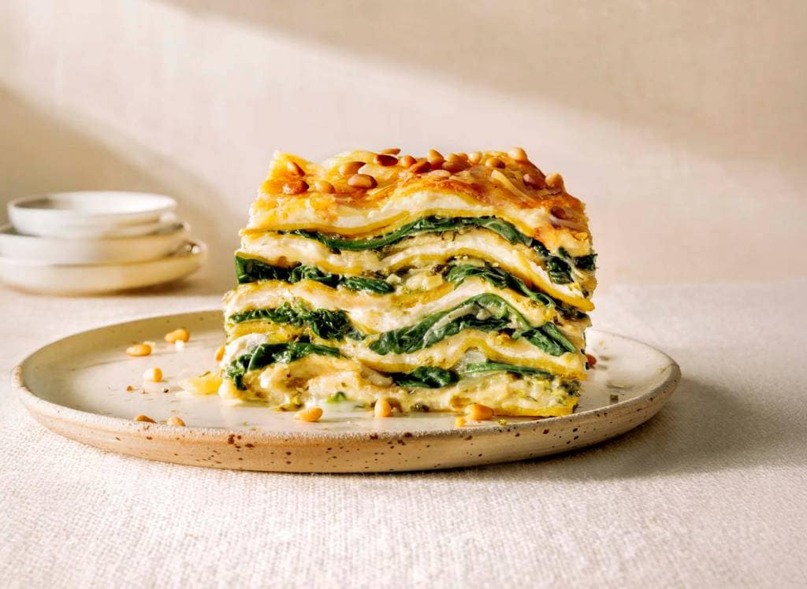
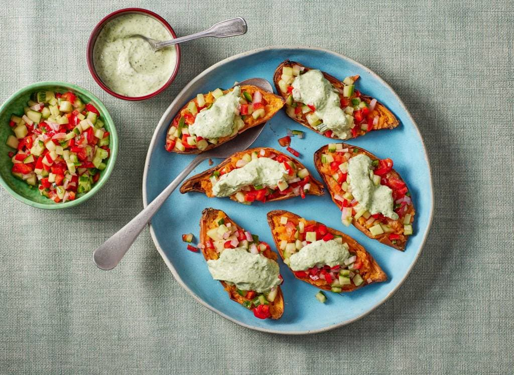

Recepten die je inspireren om te koken
Ons doel is om uw passie voor koken aan te wakkeren met de recepten die u op onze website vindt.

Ons doel is om uw passie voor koken aan te wakkeren met de recepten die u op onze website vindt.

Crispy kip en goudgele krieltjes uit de airfryer. Met een frisse gemengde salade on the side. Minimale moeite, maximale smaak. En nog gezond ook

Deze romige lasagne met ricotta, spinazie en mozzarella is gezond én tover je met de airfryer met gemak op tafel. Over comfortfood gesproken!

Een heerlijk gezond hapje: loaded zoete aardappel uit de airfryer. Krokant vanbuiten, zacht vanbinnen en met een frisse paprika-komkommersalsa.

Deze pasta met zalm en geroosterde groente uit de airfryer is de ideale gezonde maaltijd. De airfryer karamelliseert de groenten, de zalm blijft zacht en verse kruiden zorgen voor extra frisheid.